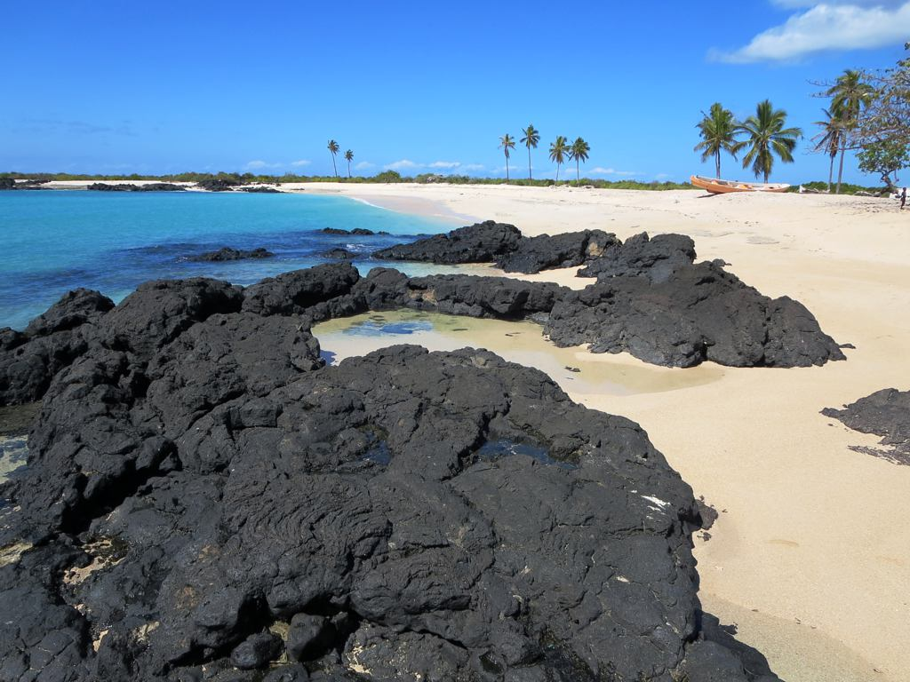

MoheliGoTRAVERSÉES MARITIMES
GRANDE COMORE · MOHÉLI
PHOTO DAVID STANLEY — CHINDINI, CC BY 2.0
ON CONNAÎTCETTE MER.
Des commandants d’ici, qui ont appris ce bras de mer ici.
Quand ils disent qu’on ne sort pas, on ne sort pas.
ÉCRIS-NOUS AVANT DE PARTIR
TRAVERSÉES MARITIMES DES COMORESmoheligo.com